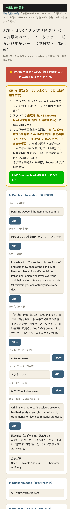

共有資料の一覧 ／ 確認ページ #769 769番: キャラ名「ペラリーノ・ウソッチ」表記統一＋貼る手順を明記(10回目のやり直し原因を直した)
#769 769番: キャラ名「ペラリーノ・ウソッチ」表記統一＋貼る手順を明記(10回目のやり直し原因を直した)
2026-09-12 config設定は既に直っていたが、貼るだけシートの再生成を忘れていたため反映されていなかった原因を特定・修正
たまごさんの指摘「ペラリーノで切らない、ウソッチまでで1セット」はtools/line_stamp_configs/peralino-usocchi.jsonでは既に直っていたが、share/check/以下のシート(HTML)を再生成していなかったため、公開ページには古い「ペラリーノ」表記のまま残っていた。3キャラ全部(鬼嫁ちゃん・ペラリーノウソッチ・珍獣ラシコル)を再生成し直し、さらに「コピーボタンを押しても自動でLINE側に貼られない」という誤解を防ぐため、ページ最上部に①コピー→②LINE欄クリック→③貼り付け→④次へ、の4ステップを大きな黄色い枠で追加した(探させない対応)。
② 数字
3件再生成したシート
24枚各キャラの画像枚数(規格OK)
③ 実データでのスクリーンショット
直す前:タイトルが「国際ロマンス詐欺師ペラリーノ」で切れていた
直した後:「国際ロマンス詐欺師ペラリーノ・ウソッチ」＋使い方4ステップを追加
④ 押せるリンク
⑤ 何をどう確かめたか
| 確認項目 | 結果 |
|---|
| キャラ名表記(ペラリーノ・ウソッチ) | 3ページ全てで実fetch確認・反映済み |
| 使い方4ステップの追加 | 3ページ全てで実fetch確認・反映済み |
| 審査リクエスト | 押していません(押すのは本人のみ) |